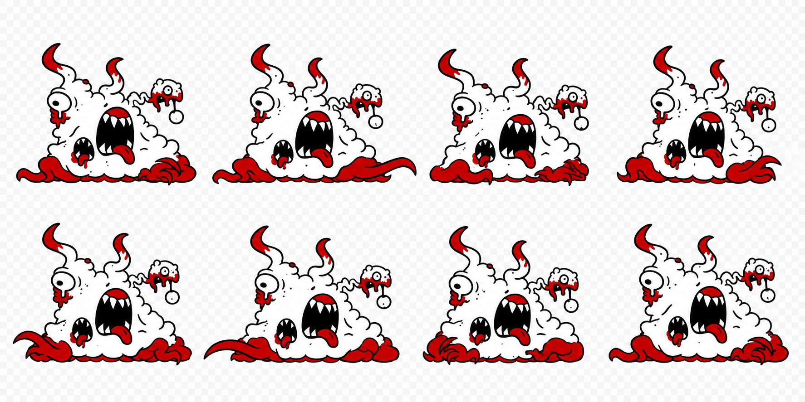

Monster animation / First art pass
Gurgle gets moving.
A tentacle-driven crawl with squashing, stretching, and a wobbling face. Redrawn from your reference in its original red, white, and black palette.
Movement study: the checkerboard is baked into the image. Transparency, frame alignment, and detail consistency need a finishing pass before use in the game.
View all eight poses

Download sprite study · Art notes and generation prompts